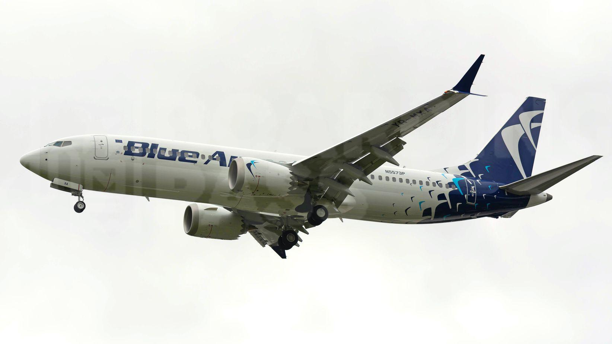
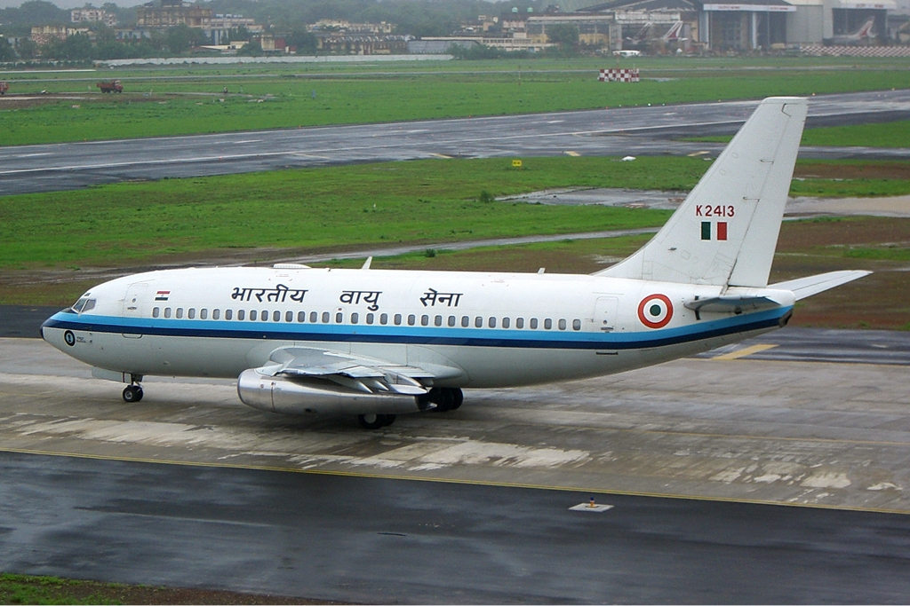

Blue Air dropped order of 6 737 MAX ordered directly from Boeing to supplement the net for Air Lease Corporation
Source: BoardingPass
Blue Air has announced that it will cancel the order for 6 737 MAX 8 aircraft directly from Boeing but will supplement the one from Air Lease Corporation from 6 to 10 aircraft.
Both orders were placed in 2017
The difference between the commands
The difference between the two agreements is important. The contract with Boeing, which Blue Air gave up, was one for the purchase of aircraft, therefore very expensive for the level of a local low-cost operator.
The one with Air Lease Corporation is a long-term lease, much more advantageous in terms of payments to be made.
What has happened since 2017 and so far with the orders?
Orders have undergone many changes since 2017, when they were placed. Each order was 6 aircraft.
At the end of 2019, the company's flight magazine stated that Blue Air would receive only eight Boeing 737 MAXs, not 12 as ordered in 2017. Below is a photo:
Differences between magazines. Source: BoardingPass
Last year the first MAX aircraft was ready

MAX aircraft. Source: BoardingPass
MAXs ordered from Air Lease Corporation were scheduled to be delivered before those ordered directly from Boeing
and the first plane has already been painted and is currently parked at Moses Lake Airport in the United States. The company expects the first MAX to arrive in Bucharest in October of this year, according to Oana Petrescu, CEO of Blue Air.
You can see more photos with the first aircraft here.
What are the oldest 737s?
3 July 2020
Production of the 737 began in 1966. Since then, some airlines have withdrawn their older aircraft, others have kept them for a number of reasons (financial, reliability, etc.). But at the moment what are the oldest 737s in operation? Let's find out.
The oldest 737 still flying
The oldest aircraft are the FAP-353 and FAP354 (737-200 and over 50 years old) which have a long history. Both initially flew for Aer Lingus (from 1969 to 1970). Aer lingus then leased these aircraft to airlines, including Air Algiere, Zambia Airlines, Nigeria Airlines and Bahamsaair, among others. After several years of passenger service with a now-defunct Peruvian airline, they joined the Peruvian Air Force.
The following 2

The next 2 aircraft in our ranking are now flying to the Indian Air Force. These are K3187 and K3186, who are over 49 years old. They were first delivered to Indian Airlines in 1971. In the early 1990s, these aircraft were transferred to the Indian Air Force.
The oldest passenger aircraft
In 1974 the C-GNLK, a Boeing 737-200, was delivered to Transavia. Since 2014, C-GNLK and C-GNLE have been flying to Nolidor Aviation in Canada. This is a charter company that flies the oldest Boeing 737-200 in the world, 45 years old .
Venezolana and the old 737-200
The Venezuelan has in use a 737-200 (YW502T) which is 42 years old.
Air Inuit and the end of the ranking
Air Inuit has a 737-200 (C-GMAI) which is also 42 years old.